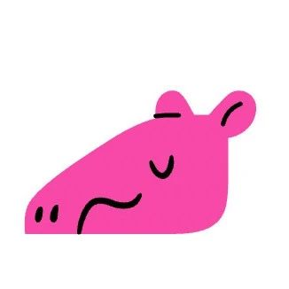

SeeDAO 孵化官宣 | AAAny
作者: SeeDAO
分类:
SeeDAO孵化, Web3
Ask Anyone Anything，全新的 AMA 交流方式。

当 Twitter Space 不能满足我们的需求，怎么办？几名极客和媒体人打造了一个全新的工具 AAAny，并在自己的小圈子里玩得不亦乐乎。最近，很多的项目方 OG 和 VC 也被吸引参与，AAAny 开始破圈。在 AAAny，你可以随时跟超哥聊 DAO 和 AI 投资，跟潘致雄聊 ChainFeeds 和他的工作流，跟 HODLong 后浪的Mable 聊 Web3 投资，跟李阳聊他的橙皮书和鲱鱼罐头。山海坞活动花絮、黑山发生了什么，这里应有尽有。AAAny 是一个专门做 AMA 的软件。你可能会想：AMA 也需要单独做个软件？其实我们经常低估了 AMA 在我们日常生活中出现的频率。上学的时候向老师提问、上市公司 Earnings Call 结束后的提问、融资的时候投资人对创业者的提问、抑或是你出门问本地朋友有什么好吃的好玩的......虽然它们没有用 AMA 的名字，但这些都是 AMA。AMA 本质上就是一个人或者一组人来回答所有人的问题，这是我们这个社会最常见的交流模式之一。所以 AAAny 的 AAA 代表了 Ask Anyone Anything——不见得是 Ask me，而是可以 Ask Anyone。AAA 是一种特殊的内容组织形式，它和绝大多数互联网常见的内容形式不一样，区别主要在于两点：内容围绕 Host 展开、回复一般都要进行非常多轮，这两点强烈地结合在了一起。AAAny 专门 AAA 设计了一套全新的内容结构：以 Host 为中心并且支持无限嵌套的结构。AAAny 有很多专门为 AAA 设计的功能，比如 host mode、threads、实时消息卡片等。AMA 在区块链不光是图一乐的工具，更是建立社区的基础设施。新的组织形态需要新的交流方式。传统企业那样一个季度半年开一次 Earnings Call 做做问答已经不够用了。为了和社区建立更强的联系，交流频次需要按照周、甚至天来计算。所以区块链项目方选择了 AMA，这是最高效、用户参与度最强的交流形式。AAAny 希望能为所有项目方提供一个更好的交流基础设施。SeeDAO 在 AAAny 内测阶段就开始参与了社区建设，我们希望和 AAAny 一起，为互联网创作更多有价值的讨论和内容。AAAny 创始团队也都是 SeeDAO 成员，彼此之间有过长时间的合作经历。希望通过本次孵化，双方可以进一步加深合作。目前 AAAny 尚处于邀请制，任何 SeeDAO 成员都可以直接找 Shawn 获取邀请码:)内容来源: Shawn
排版: Ines
审核: Ines